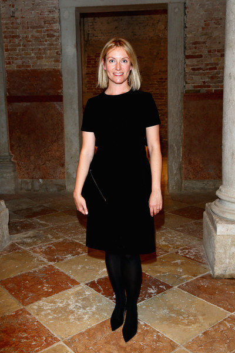

I love art. I love artists. I love galleries and museums. I love solo shows, group shows and the Whitney Biennial. I love video art, foam sculptures
and the Whitney Biennial. I love video art, foam sculptures , any installation with a soundtrack, funny performance, paintings with text, almost all collage, documentary films and institutional critique, but I'm not really an artist. Sometimes I wish I was because I look at so much art that I have opinions and ideas about what looks good, but at the moment I'm more of an art fan, and also a graphic designer.
, any installation with a soundtrack, funny performance, paintings with text, almost all collage, documentary films and institutional critique, but I'm not really an artist. Sometimes I wish I was because I look at so much art that I have opinions and ideas about what looks good, but at the moment I'm more of an art fan, and also a graphic designer.
At a talk at the Artists Institute in 2014 during Lucy McKenzie's season, I heard Penny Martin, editor of the extremely tastefulGentlewoman magazine describe the appeal of Mary Kate and Ashley Olson's clothing line The Row: "The Olsons are such good designers becuase they are really good shoppers."
In my understanding, Martin was saying that you don't have to be a formally-trained designer to make a successful, popular, well-regarded product, but you could do that as a really savvy consumer. Granted, a savvy consumer is tasteful, bold, able to assert her unique perspective and even comment on the field. But in a traditional sense it's not a matter of creative genius, ego, or hyper-criticality.
I remembered that quote recently as I was working on a project that involved recorded music I love. I'm not a musician but I would consider myself an active listener; as with art, when it comes to music I'm a fan. What does it mean to think of designers as fans? Like a good shopper, my design practice at the moment is driven by enthusiasm and curiosity. I think about, bookmark, research, and repeatedly return to the things I like, in order to make work about them. For now that's enough. I don't have to be a musician to use music in my work, so long as I present it in a way that is true to my genuine interest. There's a difference between a playlist and a mix.
According to wikipedia, a fan, or fanatic, sometimes also called an aficionado or supporter, is a person who is enthusiastically devoted to something or somebody, such as a band, a sports team, a genre, a book, a movie or an entertainer.
Designers are fans of content. We collect images, we read, we visit famous buildings and pull inspiration from vernacular expression, all with devotion. Beatrice Ward is a fan of content, and as she writes in the Crystal Goblet : "Printing demands a humility of mind." Design should treat its content with reverence, and there's no room for fanaticism: "Without this essential humility of mind, I have seen ardent designers go more hopelessly wrong, make more ludicrous mistakes out of an excessive enthusiasm, than I could have thought possible."
: "Printing demands a humility of mind." Design should treat its content with reverence, and there's no room for fanaticism: "Without this essential humility of mind, I have seen ardent designers go more hopelessly wrong, make more ludicrous mistakes out of an excessive enthusiasm, than I could have thought possible."
Michael Rock's position is a bit more active: designers are envious fans, who hope to participate in parallel to the artists and authors whose content they package. He finds satisfaction through shaping. Not only is good design delivering good content (whether or not that's generated by a designer/author), it's delivering that content imbued with the desinger's own perspective. If Ward buys the best stereo system possible to listen to her record on repeat, Rock is making fanzines, analyzing the demo of his favorite new band relative the genre in which it exists: "Work must be saying something, which is different than being about something." Even fanzines have editors, there's room for a critical voice.
Rock ends the essay asseritng that designers' true content is design itself. Rock is a design fan. And the design fanclub is large and full or sub-groups: there are the designers who love typefaces, those who love printing and binding, and those who love history. Rock's love is strategy.
To play this metaphor out, if Michael Rock is making fanzines Daniel van der Velden is writing fanfiction. As he writes: "The ambition of the designer always leads beyond his discipline and his official mandate, without this above-and-beyond having a diploma or even a name of its own." Surely Van der Velden’s position is more active and important than fandom, but he too alludes to the anti-professional, fan-freedom afforded the designer: "do not let designers just become walking encyclopaedias, adorned with such titles as 'master,' 'doctor' or 'professor,' their qualifications dependent on a framed certificate hanging on the wall. Let there be a design practice in which the hypothesis – the proposal – has higher esteem than need and justification." A fan is a participant, a necessary part of any audience-subject relationship, but a fan isn't an expert, and nobody expects them to be. A fan needs no justification beyond love. A genuine fan can't questioned.